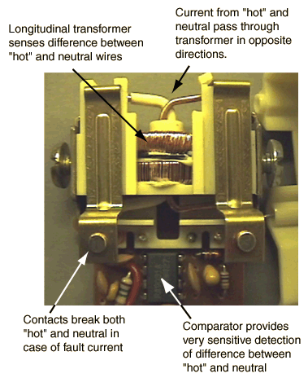
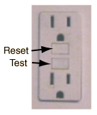

Ground Fault Interrupter
Ground fault interrupters are designed to protect from electrical shock by interrupting a household circuit when there is a difference in the currents in the "hot" and neutral wires. Such a difference indicates that an abnormal diversion of current from the "hot" wire is occuring. Such a current might be flowing in the ground wire, such as a leakage current from a motor or from capacitors. More importantly, that current diversion may be occuring because a person has come into contact with the "hot" wire and is being shocked. When a circuit is functioning normally, all the return current from an appliance flows through the neutral wire, so the presence of a difference between "hot" and neutral currents represents a malfunction which in some circumstances could produce a dangerous or even lethal shock hazard.

|
GFI's are required by the electrical code for receptacles in bathrooms, some kitchen receptacles, some outside receptacles, and receptacles near swimming pools. The horror story scenarios which led to these code requirements are things like dropping a hair dryer or a portable radio into a bathtub with a person, causing electrocution. A typical circuit breaker interrupts the ciruit at 20 amperes, but it takes only about 100 milliamperes to electrocute a person in such a scenario. The GFI is designed to detect currents of a few milliamperes and trip a breaker at the receptacle or at the breaker panel to remove the shock hazard.
The GFI has a "Test" button which causes a small difference between "hot" and neutral currents to test the device. In an example given by John de Armond, the test button put the 120 volt supply across a 14.75 K resistor, producing a current of 8.2 mA. The UL requirement for a GFI is that it trip when there is 5 mA of leakage current. There is also a reset button to use after it has been tripped.
| 
|
Thanks to John de Armond for clarifying the operation of the GFI
|
Index
Practical circuit concepts |